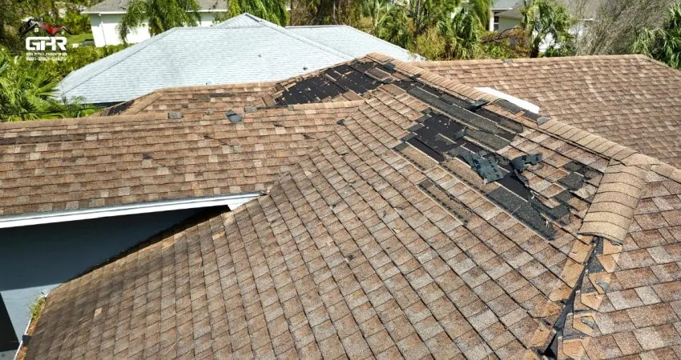
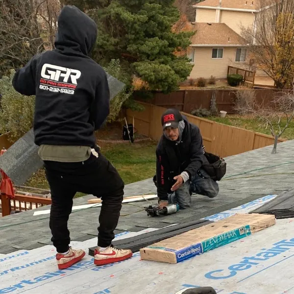

When a Storm Damages Your Roof, Here’s How You Get Back in Control
A bad windstorm, a sudden downpour, or one of those heavy Utah snow dumps can turn a normal day into a headache fast. If you walked outside, looked up, and instantly felt your stomach drop, you’re not alone. Storm damage is stressful because it comes out of nowhere and puts your home at risk.
This guide lays out the exact steps you should take the moment you notice something is wrong. If you live in the Salt Lake Valley and your roof took a hit, these steps will help you protect your home, avoid bigger problems, and make smart decisions without wasting time or money.

What We’ll Cover:
- How to assess storm damage safely
- What to do in the first 24 hours
- How to prevent small damage from becoming a major problem
- When you should repair compared to replace
- How insurance works for storm-related issues
- When to bring in a certified roofer
- FAQs and next steps
How to Assess Storm Damage Safely
The first thing most homeowners do is rush outside and climb a ladder. Skip that. Safety comes first, and wet or wind-damaged roofs are unpredictable.
Here’s a safe and straightforward approach:
Start from the ground
Walk your property slowly. Look for shingles in the yard, debris on the roof, and dents on gutters or vents. Wind can lift shingles without fully tearing them off, so anything out of place matters.
Check the attic
If you can get inside safely, look for wet insulation, dark stains, dripping, or sunlight peeking through boards. Attic issues often reveal hidden storm damage.
Look for indoor signs
Ceiling spots, bubbling paint, or a musty smell usually point to moisture intrusion. These signs are often early warnings.
Take photos
Document everything. Insurance companies rely heavily on visual evidence, and photos also help roofers understand the scope of the problem.
The goal is not to climb the roof. The goal is simply to gather enough information to understand what you are dealing with.
What To Do In The First 24 Hours
Storm damage is time-sensitive. Even a small leak can escalate quickly.
Follow this checklist during the first day:
1. Protect the interior
Move furniture, electronics, and valuables away from active leaks. Use buckets, towels, or plastic sheeting to catch or block water.
2. Cover exposed areas if it is safe
If shingles are missing or there is visible damage, a temporary tarp can help limit water entry. Only attempt this if the area is stable and easy to reach.
3. Document all damage
Take clear exterior and interior photos. Capture debris, water damage, staining, and outdoor impacts. Record the date and save all communication.
4. Call a certified roofing company for a full inspection
A trained professional can spot structural issues, hidden water intrusion, and storm-related damage. Their documentation often strengthens insurance claims.
5. Avoid storm chasers
Non-local companies often appear after major storms, make quick promises, and vanish when problems arise. Stick with trusted, certified, local roofers.
These first steps help you prevent more damage and set you up for a smooth repair or insurance process.
How to Tell If You Need Repairs or a Full Replacement
Not all storm damage requires a full replacement. Many issues can be repaired quickly if identified early.
Repairs are likely when:
A small section of shingles is missing
A few shingles are lifted or creased
Flashing around chimneys or vents, bent or loosened
Water enters from a single point
A light branch struck only one area
Repairs like these are usually affordable and long-lasting when done by a qualified crew.
A replacement might be required when:
Large areas of shingles blew off
The roof deck is soft, sagging, or wet
Hail impacts caused widespread granule loss
The roof was already near the end of its lifespan
Storm damage exposed deeper structural issues
Certified roofers document everything with photos or videos so you can clearly understand your roof’s condition.
How Storm Damage Affects Utah Roofs
Utah weather brings a variety of risks. Along the Wasatch Front, wind, hail, snow, and rapid temperature swings commonly affect roofing materials.
Common issues include:
Wind uplift that loosens or removes shingles
Ice dams that push water under the roof surface
Heavy snow loads that stress weak areas
Hail bruising that cracks protective granules
Freeze and thaw cycles that make shingles brittle
Knowing how these conditions impact your roof helps you understand why quick inspections matter.
How the Roof Repair Process Works
If your damage requires more than a temporary patch, here is what the repair process typically looks like:
Step 1: Free inspection
A certified roofer checks the full roof surface, attic structure, flashing, vents, and gutters. Hidden damage is often found during this step.
Step 2: Recommendation and estimate
You receive a clear explanation of the problem, recommended repairs, price range, and timeline.
Step 3: Repair or replacement
The crew completes the work using high-quality materials and correct installation methods. Proper workmanship is essential for long-term protection.
Step 4: Cleanup and warranty
Debris is removed, nails are magnet swept, and you receive warranty documentation along with photos of the finished work.
A straightforward process removes the stress and helps you feel confident about your home’s safety.

When to File an Insurance Claim
Homeowners often hesitate to contact their insurance company because the process feels overwhelming. With proper documentation and a certified roofer, it becomes much easier.
A claim may be worthwhile if the storm caused:
- Missing shingles
- Lifted shingles
- Hail dents or bruises
- Tree or debris impact
- Structural or interior water damage
To handle your claim properly:
- Document everything immediately
- Call your insurance provider quickly
- Have a roofing inspection completed before the adjuster arrives
- Ask your roofer to attend the adjuster meeting
- Keep copies of photos, estimates, and receipts
- Do not begin permanent repairs until approvals are given unless urgent safety repairs are needed
Clear documentation and a certified professional make the claim process smoother and more accurate.
When to Call a Professional Roofer
Here is the simplest approach. If you can see damage or suspect something is wrong, call a roofer. Storm damage rarely stays contained.
Call a professional immediately if you notice:
- Active leaks
- Sagging or soft roof areas
- Missing or torn shingles
- New stains or bubbling paint on ceilings
- Cracked, bruised, or dented shingles
- Tree branch impacts
- Musty smells or humidity spikes in the attic
Quick inspections prevent minor problems from becoming expensive repairs.
What You Can Expect From a Certified Local Roofing Company
At Go Pro Roofing, we have helped hundreds of homeowners throughout the Salt Lake Valley recover from storm-related damage. Our Master Roofer Certified team understands how Utah weather affects different roof types and how to identify both visible and hidden damage. This expertise helps homeowners feel confident when navigating repairs or insurance claims.
Here is where adding a natural interlink fits well: our company background is explained on our
Ready For Next Steps
If you are unsure how severe your storm damage is or want help understanding your insurance options, scheduling a free inspection is an easy first step. You can also review our roof repair services to learn more about the process and what to expect.
What Homeowners Are Saying
Many homeowners mention Driftwood and Estate Gray as top picks for blending style and practicality. Roofers have also noticed a rise in demand for Pacific Wave and Teak due to their unique visual appeal.
Gallery of Real Homes


Frequently Asked Questions About Storm Damage Roof Repairs
Final Steps If Your Roof Was Hit By a Storm
Storm damage feels overwhelming at first, but once you follow the steps in this guide, you will regain control quickly. Protect the interior, document everything, schedule a professional inspection, and handle repairs before the damage spreads.
If you need clarity about your roof’s condition or want fast help after a storm, reach out to a trusted roofing company that understands Utah’s weather patterns and how to protect your home for the long term. You can start with a simple visit to our main page at gprroofing.com or contact our team through our contact page.
Related Reads: